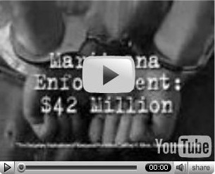

Issue #474, Feb 23, 2007- Chronicle on the Scene Feature: Bolivia's "Coca, Yes, Cocaine No" Policy is Beginning to Work
- Drug War Chronicle Book Review: "Lies, Damned Lies, and Drug War Statistics: A Critical Analysis of Claims Made by the Office of National Drug Control Policy," by Matthew Robinson and Renee Scherlen (2007, State University of New York Press, 268 pp., $27)
- Marijuana: Colorado Pot Advocate Ken Gorman Killed Saturday, Days After Local News Station Did "Exposé" On Him
- Newsbrief: Colorado Town Backs Away from Tougher Marijuana Penalties
- Bad Bills: Nevada Legislation Could Send Parents to Prison for 15 Years for a Single Plant
- Medical Marijuana: Supporters File Federal Lawsuit Against HHS, FDA
- Southwest Asia: Afghan Opium Eradication Effort Sparks New Violence
- Europe: British Top Cop Calls for Prescription Heroin for Addicts
- Web Scan
- Weekly: This Week in History
- Job Opportunities: Marijuana Policy Project, Nevada and DC
- Job Opportunity: Syringe Exchange Program Specialist, CA
- Announcement: DRCNet Content Syndication Feeds Now Available for YOUR Web Site!
- Announcement: DRCNet RSS Feeds Now Available
- Errata
- Announcement: New Format for the Reformer's Calendar
Stop the Drug War (DRCNet) is an international organization working for an end to drug prohibition worldwide and for interim policy reform in US drug laws and criminal justice system. Read more about DRCNet.
Make a Donation
Want to stop the drug war? One way to help is to make a generous donation -- member support makes up a critical portion of our budget, and we can't do it without you!
Higher Education Act Reform Campaign
some organizations DRCNet played a role in starting:
|
Issue #460 – 11/3/06
subscribe now | make a donation | search- With the 2006 elections just days away, here's a look at drug reform issues and drug reformers on the ballot.
- Less than a week out, initiatives to legalize marijuana possession in Colorado and permit regulated sales and possession in Nevada face an uphill battle, but organizers remain hopeful.
- Loretta Nall didn't set out to be the "cleavage" candidate when launching her campaign, but she recognized a good strategy when a newspaper columnist thrust it upon her.
- This important new documentary about the medical marijuana movement is DRCNet's latest membership premium.
- A Virginia sheriff and most of his department goes down for reselling seized drug and guns, a Border Patrol guard gets caught turning a blind eye in exchange for sex and cash, dope is missing from the Boston Police evidence warehouse, a small town police chief pleads guilty to protecting crack dealers, and two cops are going to prison for dealing drugs.
- DEA head Karen Tandy refused to meet with medical marijuana patients in San Diego Wednesday, the patients refused to leave, seven were arrested, and Tandy got to feel the heat for the actions of her agency.
- In a debate last week, Massachusetts Democratic gubernatorial candidate Deval Patrick said he could support marijuana legalization, and in the next breath, vowed to veto a marijuana decriminalization bill if it crossed his desk.
- A South Dakota federal court judge has dismissed a challenge to the consitutionality of the Higher Education Act's drug provision.
- An unintended consequence of last summer's war between Israel and Hezbollah in Lebanon is a steep spike in hashish prices paid by Israeli consumers due to increased border security.
- The South Pacific island nation of Vanuatu is seeing increased marijuana use and cultivation. While the usual suspects raise concerns, at least one member of parliament is sticking up for growers.
- Faced with falling commodity prices, Swazi farmers are turning to marijuana as a cash crop. Now there's talk of growing hemp.
- Legalization, prison overcrowding, forfeiture, initiatives, more...
- Events and quotes of note from this week's drug policy events of years past.
- Visit our new web site each day to see a running countdown to the events coming up the soonest, and more.
In a national political season dominated by the war in Iraq and concerns about the direction in which the country is headed, drug policy issues have largely been ignored this year. Drug policy issues are on the ballot in several states and localities and drug reformers are running for statewide office in a handful of states. Here are the campaigns and races we will be watching and reporting on next week.
NATIONAL
United States Congress: We are not singling out any races in this crucial, possible sea change, election year, and no single race has been distinguished for its drug policy implications. Should Democrats take control of one or both chambers of Congress, that could potentially have significant ramifications for the issue -- imagine Rep. John Conyers (D-MI) as head of the House Judiciary Committee instead of Rep. James Sensenbrenner (R-WI), for starters. Historically drug reformers have tended to find both major parties disappointing, however.
If you are interested in how your representative represents your views on drug policy issues, the Drug Policy Alliance has prepared a 2006 Drug Policy Reform Congressional Voter Guide, as have Marc Emery and Cannabis Culture.
STATE INITIATIVES
Election Day approaching
Arizona: Proposition 301 would roll back a decade-only sentencing reform law as it applies to methamphetamine offenders. Under the sentencing reform, first- or second-time drug possession offenders cannot be sentenced to jail or prison -- only to probation. This legislature-sponsored initiative would allow meth offenders -- and only meth offenders -- to be jailed on a first or second offense. It is opposed by Meth-Free Arizona -- No on 301, a citizens' and activist organization, as well as leading Arizona jurists.
Colorado: Amendment 44 would legalize the possession of up to one ounce of marijuana by adults. Building on successful non-binding resolutions at several Colorado universities and last year's surprise Denver vote to legalize possession under city ordinance, initiative organizers SAFER Colorado have been hammering away at what has proven to be a particularly resonant theme: Marijuana is safer than alcohol. While the most recent polls show the initiative trailing, organizers say those polls under-sample youthful voters who are more likely to vote yes.
Nevada: Question 7 would replace marijuana prohibition with a system of regulated, taxed, and controlled marijuana sales and would allow for the possession of up to one ounce of marijuana by adults. Sponsored by the Committee to Regulate and Control Marijuana, an affiliate of the Marijuana Policy Project, the initiative, if successful, would result in Nevada being the first state to sanction marijuana sales. The effort builds on four years of work in Nevada by MPP and its affiliates. A similar initiative won 39% of the vote in 2002 and a 2004 signature drive failed to make the ballot, but this year the measure not only made the ballot but was polling above 40% in recent weeks and leading in the only poll that used the actual ballot language.
South Dakota: Initiated Measure 4 would allow for the use of medical marijuana by qualified patients with a doctor's recommendation. The measure allows qualified patients or caregivers to grow up to six plants and possess up to one ounce of marijuana. South Dakotans for Medical Marijuana, the group behind the campaign, has just unleashed its latest round of TV and radio commercials featuring two medical marijuana patients and a former police officer. There is no known polling on how the measure will fare in the socially conservative Upper Midwest state.
LOCAL INITIATIVES
Santa Barbara, Santa Cruz, and Santa Monica, California: All three cities will vote on initiatives calling for adult marijuana offenses to be the lowest law enforcement priority. Part of the California Cities Campaign, an outgrowth of the successful Oakland Proposition Z lowest priority initiative in 2004, organizers hope victories this year will help lay the groundwork for a statewide effort to further reform California's marijuana laws. Initiative language is available at Sensible Santa Barbara (Measure P), Santa Cruz Citizens for Sensible Marijuana Policies (Measure K), and Santa Monicans for Sensible Marijuana Policy (Measure Y). According to state and local organizers, the most difficult fight will be in Santa Monica.
Missoula County, Montana: Initiative #2 would make adult marijuana offenses the lowest law enforcement priority. Sponsored by Citizens for Responsible Crime Policy, the initiative is facing strong law enforcement opposition, but has the benefit of being held in what is arguably the most liberal county in the state.
Eureka Springs, Arkansas: Sponsored by University of Arkansas/Fayetteville NORML, the municipal ballot measure would make adult marijuana possession the lowest law enforcement priority. It took only 115 signatures to get a lowest priority initiative on the ballot in this small, countercultural town in Northwest Arkansas.
Plymouth, Massachusetts: In the 1st and 12th Plymouth Representative Districts, voters will be voting to tell their representatives to support decriminalization: “Shall the state legislator from this district be instructed to vote in favor of legislation that would make the possession of less than one ounce of marijuana a civil violation, subject to a fine of no more than $100.00 and not subject to any criminal penalties?”
Middlesex and Norfolk, Massachusetts: Voters in the 7th Norfolk Representative District and the 3rd Middlesex Senate District will be voting on whether to tell their representatives to support medical marijuana: “Shall the state legislator from this district be instructed to vote in favor of legislation that would allow seriously ill patients, with their doctor’s written recommendation, to possess and grow small amounts of marijuana for their personal medical use?”
STATEWIDE ELECTIVE OFFICE
Alabama: Loretta Nall is running for governor on the Libertarian Party ticket. Denied a line on the ballot by Alabama's tight election laws, Nall is running a write-in campaign in hopes of gaining sufficient votes to win the party a spot on the ballot next time around. While Nall is calling for marijuana legalization and substantive sentencing reform, among other issues, her breasts have garnered the most press coverage. (See related story this issue.)
Connecticut: Long-time drug reform leader Cliff Thornton is running as the Green Party nominee for governor. While Thornton has been excluded from most polls and televised debates, the commanding lead held by incumbent Gov. Jodi Rell over her Democratic opponent may leave political space for a protest vote for Thornton.
Maryland: Long-time drug reform leader Kevin Zeese is running for US Senate as a unity candidate on a combined Green-Populist-Libertarian ticket. With a tighter-than-expected race between Democrat Ben Cardin and Republican Michael Steele, a strong Zeese showing could potentially throw the election to one candidate or the other. With some data suggesting he is drawing support from both candidates, however, and with Cardin so far polling ahead consistently if not comfortably, that is unclear.
New Jersey: The one-time Ed Forchion, who has legally changed his name to NJ Weedman, is on the ballot in the US Senate race. Long a media favorite in the Garden State for his pro-marijuana antics, NJ Weedman campaigns on a platform of legalization.
Texas: Musician, novelist, and humorist Kinky Friedman has called for the legalization of marijuana. He is currently polling in the teens in a four-way race where incumbent Republican Gov. Rick Perry is leading with about 35% of the vote.
(Disclaimer: DRCNet endorses the positive drug reform ballot measures being promoted by our colleagues around the country -- the only ballot measure mentioned here that we oppose is 301 in Arizona. However, Drug War Chronicle is restricted by virtue of DRCNet Foundation's nonprofit status from taking positions for or against any parties or candidates for elected office, and DRCNet's supporters in fact span a wide range of the political spectrum. This article is intended only to provide objective information to foster understanding of the impact of the electoral process on the issue, and to support the democratic principle of an informed electorate.)
With a measure to legalize the possession of up to one ounce of pot on the ballot in Colorado and a measure to allow the regulated sale of marijuana and the possession of up to an ounce in Nevada, Tuesday could be the first time voters in any American state have embraced an end to marijuana prohibition. At this late juncture, most polls are painting it as an uphill fight, though organizers have reasons why they believe the polls may be off. The odds are looking better in Nevada than Colorado.
The only state in which marijuana possession is legal is Alaska. There, it was the courts, not the voters, who made the decision.

CRCM TV ad, posted to YouTube
Despite creative and energetic campaigns by the Committee to Regulate and Control Marijuana (CRCM) in Nevada and SAFER Colorado in the Rocky Mountain State, most recent polls show both measures losing, although the margin is much narrower in Nevada, and one Nevada poll showed the measure ahead.
In both states, however, organizers say the polls are undercounting support for legalization. In Nevada, spokesmen for the measure there told the Chronicle that the only poll that used the actual ballot language had the measure ahead by a margin of 49% to 43%. That contrasts with Nevada newspaper polls that showed the measure losing with between 37% and 41% of the vote.
"While I would say that it is unlikely the polling is that far off, we certainly expect greater support than what the polls are reporting," said SAFER Colorado's Steve Fox. "Many young people don't respond to polls or are not even reached by them because all they have are cell phones. While we can't claim that we're going to cruise to an easy victory," he told Drug War Chronicle, "other polls we have seen seem to indicate greater support than those media polls."
"The polls jibe," said CRCM campaign manager Neal Levine. "The Reno Gazette-Journal poll asked if people favored the legalization, use, possession, and transfer of marijuana, while our poll used the actual ballot language. The explanation of the difference lies in the wording of the question asked. The Review-Journal poll, while it shows us behind, shows a huge upward trend over their last poll. Their language wasn't as slanted, but it still didn't ask the question voters will be asked on the ballot. What is consistent is that the campaign is trending up," he told the Chronicle last month.
And it was still trending up, but also still trailing this week. "In a new Reno Gazette-Journal poll, we cut the gap by seven points," said campaign communications director Patrick Killen Thursday. "According to them, we're still behind 41% to 52%, but again, their question didn't address taxation and regulation or the many safeguards our measure has. Still, the good news is this shows the campaign is moving forward."
Both states have seen hard-hitting organized opposition campaigns led by establishment political figures, law enforcement, and the federal anti-drug bureaucracies. In Colorado, Denver DEA special agent in charge Jeffrey Sweetin has taken a lead position in opposing the measure, along with Gov. Bill Owens and Attorney General John Suthers. Owens and Suthers were among those who were surprised last Friday when nearly a hundred pro-legalization demonstrators showed up at their anti-legalization press conference.
In Nevada, CRCM has been busy challenging interference in the campaign by federal officials and Nevada elected officials. In mid-October, the group filed a lawsuit against Clark County and Las Vegas officials seeking an injunction to stop them from campaigning against the measure on the tax payers' dime. The following week, CRCM supporters confronted deputy federal drug czar Scott Burns, who flew in from Washington, DC, to oppose Question 7 at a small-town forum. "Czar, go home! Leave Nevada alone!" they chanted.
While CRCM is engaged in TV, radio, and web-based advertising, the lead opposition group, the ironically named Committee to Keep Nevada Respectable has limited itself to a late radio ad, which CRCM attacked Thursday as full of lies. "They say it would bar employers from doing drug testing, when the measure explicitly says they can," complained Killen. "It says we favor street use of drugs, which is simply wrong on two counts. First, this isn't about 'drugs;' this is about marijuana. Second, again, the language of Question 7 explicitly bars the public consumption of marijuana."
The ad wars may not matter that much in the end, said University of Nevada Las Vegas political science professor Ted G. Jelen. "The commercials are not very effective," he told the Chronicle. "People aren't paying that close attention. Also, I think this measure is a little bit complicated. Most people don't take these issues very seriously, so the message has to be simple. They keep talking about taxation and regulation, but it might be better if they just said we're going to treat it like booze."
Jelen pronounced Question 7's chances of passage as "unlikely," although he predicted it would get a respectable showing. Still, he said, given the national political landscape and scandal-driven, unexpectedly competitive gubernatorial and US House of Representatives races in Nevada, turn-out could be high -- and that could affect the outcome.
CRCM is counting on that. "We've got all kinds of volunteers, and now it's time to get people to the polls," said Killen. "We're counting on non-traditional voters -- young voters, new voters, disenchanted voters -- who aren't showing up on the radar. We're doing early voting through Friday, and then it's the final push toward Tuesday."
With both measures trailing in most polls, organizers are starting to take a longer view. "Certainly, the polls being released by the media indicate that we are far behind," said SAFER Colorado's Mason Tvert. "Whether that will be the case after actual voting takes place remains to be seen. But it is important to remember that this is just one step in a long battle to educate the public about the fact that marijuana is less harmful than alcohol. Through the course of this campaign, our basic message has resonated across the state and in national publications like USA Today and the Washington Times. Despite the fact that we have spent less than $60,000 after the signature drive, we have generated hundreds of thousands of dollars worth of earned media coverage. We have taken recreational marijuana policy reform from basically nowhere and have made it a major topic of discussion and debate in the state. This campaign is not the end of our efforts in Colorado. If we lose, we will continue to educate the citizens of the state until the time is right for another initiative."
There is now less than a week until the voters hit the voting booths. It is now looking uncertain, but not impossible, for 2006 to be the year voters said no to marijuana prohibition.
Libertarian Party Alabama gubernatorial candidate Loretta Nall couldn't get enough signatures gathered to win a spot on next Tuesday's ballot, but in a bizarre twist, her breasts have garnered her enough attention to make her a water-cooler topic of conversation not only in the Heart of Dixie, but from coast to coast. The 30-something Alabama housewife has taken what could be viewed as a demeaning local newspaper column about her breasts and cleavage and, in an act equal parts political jiu-jitsu and political theater, used it to gain a nationwide soapbox for her platform of drug and sentencing reform, immigrant legalization, and opposition to the war in Iraq and the Patriot and Real ID Acts.
It all began with a photo of Nall alongside a brief, dismissive mention of her campaign in a column by the Montgomery Independent's Bob Ingram back in March. The photo -- obtained by the paper through a Google search and used in lieu of the more conservative image she had provided -- showed the amply-endowed Nall in a low-cut blouse with plunging cleavage. Ingram revisited the topic a few days later, telling readers the Nall photo marked the first time a woman's cleavage was featured in his column.
Nall took it from there. In a letter to Ingram and Independent publisher Bob Martin, she challenged the apparently breast-obsessed pair to discuss her campaign instead of her physical attributes. "Now that you and the rest of Alabama have been introduced to 'the twins' perhaps you'd like to meet the rest of me," she wrote. "I'll don my burka, so y'all won't be distracted, and perhaps we can discuss the other planks in my platform, since Mr. Ingram saw fit to only discuss one."
By the end of March, Nall was reporting wildly increased traffic at her campaign web site and increasing attention across the blogosphere, and by the beginning of May she had taken advantage of the attention to unveil a new "Flash for Cash" appeal for donations, where an animated Nall figure would reveal what's behind the blouse for a $50 campaign contribution.
She took it to the next level when she unveiled a new line of t-shirts and posters featuring the famous cleavage shot above and photos of incumbent Republican Gov. Bob Riley and his Democratic opponent, Lt. Gov. Lucy Baxley below, with the text reading "More of These Boobs and Less of These Boobs."
Since then, it has been a media frenzy for Nall, with appearances on the national cable news networks Fox and MSNBC and NBC's The Today Show, as well as countless radio interviews -- both national and local -- and unceasing attention in the blogosphere. And in the ouroboros world of the media, the attention Nall received from some media outlets meant she was all the more newsworthy on other media outlets.
The national interest meant that the homeboy media needed to pay attention, and it did. An Alabama-based Associated Press story ran in papers across the country, local TV stations began devoting increasing air time to her breasts (and her campaign), and on Wednesday evening she was slated for a 20-minute appearance on Alabama's only statewide newscast, "On the Record."
"The Alabama press has really had a good time with this," Nall told Drug War Chronicle. "The campaign is full of nasty attack ads, and I'm doing something different and they're eating it up. Yes, there is lots of stuff about me being 'the breast candidate for the job' and 'racking up points,' but then they go on to actually talk about my campaign and my platform. The boobs thing has been fun for me and the media, and I've garnered some good editorials as a result."
But despite the humor of her campaign, Nall is a serious candidate. "Everybody was all excited about the boob stuff," she told the Chronicle, "but I just use that as a way of getting a platform to get at my real issues, especially the Patriot and Real ID Acts, No Child Left Behind, and drug policy and prison reform," the Alabama housewife explained. "Hammering away at the number of people in our overcrowded prisons has been one of my main planks."
And she wasn't afraid to go behind enemy lines, making an appearance on Fox News' Fox & Friends program, where she simply steamrollered a seemingly stunned pair of Fox anchors. "It's hard to outfox Fox, but I didn't really pay any attention to their questions, I didn't let them hem me in," Nall explained. "I figured if I pulled a Marc Emery and talked non-stop, they wouldn't have a chance, and they didn't."
Nall is not being included in polling on the governor's race, but said she believed she would poll well above the 1% needed to win a ballot line for the Libertarian Party in 2008. "If the feedback I've been getting is any indication, I could go as high as 5% or 6%," she predicted. "I am hearing from a lot of Republicans who say I am a true conservative, but I'm also getting support from a lot of lefty Democrats. There is a large segment of the population that feels like it doesn't have a political voice when the major party candidates here are trying to out-Jesus each other."
Dear Drug War Chronicle reader:
Many drug reform enthusiasts read on our blog this fall about a new video documentary, Waiting to Inhale: Marijuana, Medicine and the Law, and an exciting debate here in Washington between two of my colleagues and a representative of the US drug czar's office that followed the movie's screening. I am pleased to announce that DRCNet is making this film available to you as our latest membership premium -- donate $30 or more to DRCNet and you can receive a copy of Waiting to Inhale as our thanks for your support.
I've known about Waiting to Inhale for a few years, and I am pretty psyched to see it out now and making waves. People featured in the movie -- medical marijuana providers Mike & Valerie Corral and Jeff Jones, patient spokesperson Yvonne Westbrook, scientist Don Abrams -- are heroes whose stories deserved to be told and whose interviews in this movie should be shown far and wide. You can help by ordering a copy and hosting a private screening in your home! Or you and your activist friends can simply watch it at home for inspiration. (Click here for more information including an online trailer.)
Your donation will help DRCNet as we pull together what we think will be an incredible two-year plan to substantially advance drug policy reform and the cause of ending prohibition globally and in the US. Please make a generous donation today to help the cause! I know you will feel the money was well spent after you see what DRCNet has in store. Our online donation form lets you donate by credit card, by PayPal, or to print out a form to send with your check or money order by mail. Please note that contributions to the Drug Reform Coordination Network, our lobbying entity, are not tax-deductible. Tax-deductible donations can be made to DRCNet Foundation, our educational wing. (Choosing a gift like Waiting to Inhale will reduce the portion of your donation that you can deduct by the retail cost of the item.) Both groups receive member mail at: DRCNet, P.O. Box 18402, Washington, DC 20036.
Thank you for your support. If you haven't already checked out our new web site, I hope you'll take a moment to do so -- it really is looking pretty good, if I may say so myself. :) Take care, and hope to hear from you.
Sincerely,
David Borden
Executive Director
A Virginia sheriff and most of his department goes down for reselling seized drug and guns, a Border Patrol guard gets caught turning a blind eye in exchange for sex and cash, dope is missing from the Boston Police evidence warehouse, a small town police chief pleads guilty to protecting crack dealers, and two cops are going to prison for dealing drugs.
Two of our stories this week are from Mississippi, but there are a lot more crooked cops down in the Mudcat State, as the Jackson Clarion-Ledger noted last Friday in an article simply -- and aptly--titled "Accused-Lawmen List Grows." Let's get to it:
In Henry County, Viriginia, Henry County Sheriff Harold Cassell was indicted for covering up the sale of seized guns and drugs by 13 of his deputies. The sheriff's department crew made up 14 of 19 people indicted on charges including racketeering conspiracy, weapons offenses, narcotics distribution, obstruction of justice and perjury. The crew is accused of stealing drugs and guns being held by the department; distributing cocaine, marijuana, and "a date rape drug; money laundering; and obstruction of justice. Virginia state police have been sent in to patrol the county now that a substantial portion of the sheriff's department is behind bars. Cassell himself is out on $25,000 bond. He is accused of failing to take action after being notified of corrupt activities, helping to launder money, and lying to federal investigators.
In Seattle, a US border guard made bail Tuesday after being accused of letting drugs get through the border in return for cash and sexual favors from a female drug smuggler. Desmone Bastian allegedly allowed the smuggler, who is also a brothel madam, to make repeated trips into the United States carrying marijuana and Oxycontin. He came under suspicion when he was observed leaving his post at the Blaine, Washington, border crossing to approach her car, which was found to contain 3,000 Oxycontin tablets when it was searched. A review of border crossing records revealed she had made repeated trips through the border checkpoint, often in Bastian's lane, but had never been subjected to close inspection.
In Boston, the Boston Police Department's anti-corruption unit is investigating whether police officers stole drugs missing from an evidence warehouse. Earlier this month, police announced that some seized drugs could not be accounted for, but suggested they might only have been misplaced as they were moved from one section of the warehouse to another. Now, however, Boston police admit the drugs are missing, although they won't say which drugs or how much. As the investigation continues, local prosecutors are pondering how they will prosecute criminal cases without the evidence.
In Oxford, Mississippi, Ruleville Police Chief Ronald Durelle Robinson pleaded guilty October 26 to extortion for accepting cash payments to not file drug and gambling charges against a crack cocaine distributor. Robinson, 46, and Ruleville Assistant Police Chief Larry Mitchell, 33, were indicted by a federal grand jury in July on charges they provided protection to crack dealers and people they thought were crack dealers between December 2003 and June 2006. Robinson was originally charged with two counts of extortion and four counts of attempting to aid in the possession of crack cocaine with the intent to distribute, but the feds dropped all but one extortion count in exchange for the guilty plea. He faces up to 20 years in prison.
In Biloxi, Mississippi, a veteran Biloxi Police Department officer was sentenced Monday to 5 years in prison for selling Ecstasy. Officer Darrell Cvitanovich Jr. pleaded guilty earlier this month after he was arrested when a June raid of his home turned up several Ecstasy tablets. Circuit Court Judge Robert Clark sentenced Cvitanovich to 15 years in prison, but suspended 10. Cvitanovich has until noon on November 15 to turn himself over to the Mississippi Department of Corrections.
In Milwaukee, a former Milwaukee Police Department detective was sentenced last Friday to four years in prison on federal cocaine distribution and conspiracy charges. Detective Larry White, a 10-year veteran of the force, transported cocaine from Illinois to Wisconsin for his then brother-in-law in 2004 and 2005, earning $1,000 per trip, according to court records. During sentencing, White's lawyers played for sympathy, arguing that White had become addicted to cocaine because of job stress and the killing of a nephew. The sob story must have worked because US District Court Judge Lynn Adelman sentenced him well below the advisory federal sentencing guidelines. Under the guidelines, he should be doing 5 ½ to 6 years.
Police arrested seven medical marijuana patients demanding to speak with Drug Enforcement Agency (DEA) head Karen Tandy at a San Diego hotel Wednesday after they refused to leave. One other patient was cited, and two others were cited earlier for hanging a banner that read "The DEA is Not My Doctor."
Those cited or arrested were among about 60 demonstrators who showed up at the Marriot San Diego Mission Valley, where the DEA is holding a conference on medical marijuana. San Diego area patients and their supporters are furious with the federal drug agency for its role in raiding and closing medical marijuana dispensaries in the area.
According to Americans for Safe Access (ASA), the medical marijuana defense group that organized the action, protestors dumped 1,500 empty pill bottles in front of the hotel as a way of showing that the DEA's actions left them without their medicine. The patients refused to leave until Tandy came out to speak with them, and when she declined, they remained and were arrested.
While medical marijuana was legalized by California voters a decade ago, the federal government does not recognize it and views any marijuana use as illegal. Acting with the support of San Diego County political officials and law enforcement, the DEA has effectively shut down what was a growing network of medical marijuana dispensaries serving the San Diego area.
"Doctors recommend cannabis and patients use it because it works," said ASA executive director Steph Sherer. "The DEA is inflicting unnecessary suffering on tens of thousands of Americans by denying them a safe, effective medicine. It has to stop."
The action may not have reined in the rogue agency, but it helped turn up the heat on Tandy, who, according to ASA California state coordinator Alex Franco, came down and apologized to the Marriot staff for the "commotion" caused by the protest and arrests. When you head an agency that is taking medicine from seriously ill people, sometimes you have to pay the price, both personally and professionally.
Democratic Massachusetts gubernatorial candidate Deval Patrick has, according to recent polling, a huge lead on his opponent, Republican Lt. Gov. Kerry Kealey. It isn't because of the clarity of his position on marijuana policy.
At the fourth and final gubernatorial debate October 26, both major party candidates and two minor party candidates were asked the following question by the debate moderator: "Since the 1970s at least a dozen states have decriminalized the possession by adults of small amounts of marijuana for personal use. Massachusetts is not one of them. In a 2003 Boston University study estimated that the thousands of arrests for pot possession each year cost more than $24 million in law enforcement resources. There's a bill before the legislature that would reduce the penalty for possession of less than an ounce to a $100 civil fine. Would you sign it if it reached your desk?"
After saying that he hoped the bill never reached his desk because that was not his priority, Patrick added that law enforcement should emphasize large drug traffickers and that the same person who provided marijuana to his drug addict uncle also provided him with heroin. He concluded his initial response by saying, "I'm very comfortable with the idea of legalizing marijuana. I just don't think it ought to be our priority."
The moderator was reduced to asking Patrick directly if he would veto the bill. "I would veto that," he responded.
Republican candidate Healey didn't dance around in her response. "I would veto that proposal," she said, citing the cost of drug addiction and the "tragedy" of kids in the social service system because of drug-addicted parents. "Anything that leads to drug addiction should be absolutely off the table and I would never legalize drugs."
Independent gubernatorial candidate Christy Mihos joined the consensus, saying that he supported medical marijuana, but would veto a decrim bill. Only Green-Rainbow candidate Grace Ross gave any positive indication about the decrim bill, but that was vague too. "I'm not big for throwing people in prison for small amounts of marijuana but what the real issue is -- drug addiction, and every other industrialized nation doesn't have as many people in prison and there's a reason because when someone's addicted to something they can get treatment on demand, they can get treatment immediately because universal health care means when you know you need treatment you go in and you get it. So I think if we're going to talk about drugs lets catch the big folks who have the big amounts of money who bring them into communities, not the small fish."
Still, Ross refused to say whether she would sign or veto a decrim bill, saying she would want to see the context of other "much more important" policy changes. She did, however, obliquely attack Healey's comments about drug-addicted parents. "I think we have got to be real here because it's not about what's legal and what's not legal completely because a lot of those kids in DSS their parents are addicted to alcohol, not to illegal substances and I think that the one piece about this kind of question that's legitimate is that addiction is not connected with which substances are legal or not. And so we need to be honest here. I think the question of where marijuana sits in comparison to alcohol is a legitimate question and we need to deal with addiction as addiction and not about criminalizing people who are addicted. We need to deal with it as addiction."
In local ballot questions in the 2000, 2002, and 2004 general elections, more than 410,000 Massachusetts residents have voted for marijuana law reform.
A federal court judge in Aberdeen, South Dakota, last Friday dismissed a lawsuit challenging the constitutionality of the Higher Education Act's drug provision, which bars students from receiving federal financial assistance if they receive a drug conviction while in college. The suit had been filed by three individual students -- two recruited by DRCNet -- backed by Students for Sensible Drug Policy and the ACLU Drug Law Reform Project.
Under the HEA drug provision, nearly 200,000 students have been denied financial aid. As originally passed, the drug provision applied to any drug conviction, but under rising attack from educators, students, and civil rights groups, the act's sponsor, Rep. Mark Souder (R-IN) drafted a "fix" limiting it to drug offenses committed while students are in college. Souder's partial reform to the law passed earlier this year as part of a larger educational package. But that reform does not satisfy the act's opponents, who seek a total repeal.
In the lawsuit, the ACLU argued that the HEA violated the Fifth Amendment on two counts. First, the group argued, by singling out drug law violators, the act violated the amendment's due process clause. Second, the HEA drug provision amounted to double jeopardy by penalizing a student twice for the same offense.
But federal Judge Charles Kornmann didn't agree. In his decision granting a government motion to dismiss, he rejected both Fifth Amendment arguments. Still, Kornmann agreed that the provision is unfairly. "It is true," he wrote, "as pointed out by the plaintiffs, that students convicted of possessing small amounts of marijuana may be prevented from receiving federal student financial aid while those students convicted of serious sexual or violent crimes would not suffer a similar fate. However, the mere fact that the classification results in some inequality does not, in and of itself, offend the Constitution."
"This decision is flat wrong. It's completely irrational to attempt to reduce drug abuse by kicking students out of school. Putting up roadblocks on the path to education only causes more drug abuse," said Kris Krane, SSDP's executive director. "It's unfortunate that students won't yet have our day in court, but we will soon be heard in the halls of Congress. On November 17, hundreds of SSDP members will take our concerns directly to lawmakers' doorsteps when we gather in Washington, DC for our national lobby day. The Removing Impediments to Students' Education (RISE) Act, which would repeal the penalty, already has 71 cosponsors."
At last report, a decision had not been made as to whether to appeal the decision.
During last summer's 34-day war between Israel and Hezbollah in Lebanon, some Israeli hash smokers called for a boycott of Lebanese hash. Now that hostilities have ceased, however, Israeli hash heads have a new problem: The stuff is just too damned expensive.
According to an article published in the Israeli newspaper Yedioth Ahronoth and picked up by various news agencies, supply disruptions during the war and increased border security since then -- not only on the Lebanese border, but also those with the Palestinian Territories and Egypt -- have caused the price of cannabis to spike eight-fold.
Smoking and selling cannabis are illegal but popular activities in Israel.
The report on increased prices came during a briefing on security and drug trafficking at an Israeli village near the Lebanese border. "While we are sitting here, dozens of kilos of drugs are making their way into Israel through the village," an unnamed Israeli security officer told the newspaper. The official also claimed that Hezbollah militants not only smuggle the drugs, but use the commerce to gather intelligence along the border.
The hash shortage and resulting high prices are only aggravated by the security crackdown in Gaza and along the Egyptian border. Conducted by the Israeli Defense Forces to deter arms smuggling into Gaza, the crackdown is putting a damper on the extra-legal cross-border cannabis trade, too.
A recent National Drug Squad raid on Malekula, part of the 80-island New Hebrides archipelago that makes up the country of Vanuatu, has led at least one member of parliament to say that harsh economic conditions justify the growing of marijuana by community members. In the raid in question, police rounded up 20 villagers and took them to jail in the capital, Port Vila. Police also seized 40 bags of freshly harvested marijuana.
In reaction to the raid, MP Donna Browny, who represents Malekula, told Radio New Zealand that people are justified in planting marijuana to earn money for their children's school fees when the copra price is down and the government has not found an alternative commodity to replace it. Browny urged leniency for the villagers, saying they planted pot instead of coconut trees because they needed the money.
Browny's is the first voice in opposition to the rising clamor from local law enforcement and some nonprofit groups in the Connecticut-sized archipelago of some 200,000 people. Vanuatu police took advantage of the annual Law Week last week to warn that marijuana growing and use is on the rise. "Vanuatu is lucky, yet, because at this stage we haven't come across a case of hard drug consumption like cocaine or opium but with the current trend there is a risk," a drug squad spokesman told the audience at a cannabis awareness session, according to an account in the Vanuatu News.
The association of non-governmental organizations (NGOs) in Vanuatu, VANGO, was raising similar concerns a week earlier. Marijuana use is on the rise and so is use among young people, warned VANGO spokesman Henry Vira. "Every week there is young people being arrested for the use of marijuana or possession and cultivation of the plant," he told Radio New Zealand.
The police want more resources for law enforcement. The NGOs want increased drug treatment and substance education. The marijuana growers and smokers undoubtedly just want to be left alone.
Faced with agricultural crisis and an irrepressible and growing marijuana farming sector, the southern African kingdom of Swaziland is now considering the production of another form of cannabis -- hemp. "Swazi Gold," as the locally produced pot is known, is a valuable commodity, fetching up to $5,000 a pound in the European market, and with growers of traditional crops such as cotton and sugar seeing tough times because of falling prices, generations-old, small-scale, traditional marijuana cultivation is being transformed into a major cash crop in the economically staggering nation.
Known in the local parlance as "dagga," Swaziland marijuana is consumed locally and exported to neighboring countries in southern Africa, as well as Europe. According to the United Nations Office on Drugs and Crime (UNODC), marijuana production in southern Africa generated about 10% of the $142 billion annual global marijuana trade. The UNODC's 2006 annual drug report calls Swaziland one of the major producers in the region. The other major regional marijuana producers are identified as Lesotho, Malawi, South Africa, Swaziland and Tanzania.
"People here will get around R80 [roughly US$11] for a 10kg bag of maize when they sell it at the market, but they will get R3,000 [about $405] for a 10kg bag of cannabis if they can sell it to someone who is going to take it outside of Swaziland," local informants told the UN's IRIN News Service. "A person can grow 30 10kg bags in a year up in the hills here, and they use the money to buy cows, furniture, send their children to school. We are in a good situation because our fathers grew dagga, so we could afford to go to school, have clothes and other benefits."
According to South Africa's Institute for Security Studies (ISS), the Swazi pot crop is being integrated into existing regional and global criminal networks. "Of the cannabis that is harvested, the best quality is earmarked for compression into one- or two-kilogram blocks that are smuggled via South Africa and Mozambique to Europe and the UK [United Kingdom]," said a recent ISS report on Swaziland's cannabis trade. "Nigerian criminal networks have moved into the dominant position in the Swazi cannabis trade during the past few years, and the proceeds of their sales in Europe are used to pay for cocaine purchased in South America, which is then smuggled to South Africa and elsewhere."
Swazi police attempt to eradicate the crops, but without much success. While the Swazi government gets limited anti-drug aid from the US, more important support from South Africa has ended because Swaziland can't afford to pay its share.
An IRIN reporter accompanied the head of Swaziland's anti-drug unit, Supt. Albert Mkhatshwa, on one search-and-destroy operation where a plantation was burned. "This is just dagga being grown by some of the villagers close by," Mkhatshwa explained. "We will spray it with weed killer and the plants will be dead in a day or so, but if we come back in a month's time it is likely more will be growing in the same spot. The people know we don't have the necessary resources to cover the whole area, so they will take a chance that we will not come back soon. People have been growing herbal cannabis for a long time in Swaziland, long before it was illegal," he said.
And if some local entrepreneurs and government officials have their way, people may be growing hemp as well. According to IRIN, the Swazi government is set to allow small-scale production of hemp to see if it has the potential to become an economically viable crop.
"In hemp we have an alternative to cotton, which has let us down badly over the last few years. It has been because of marijuana that we have found it difficult to talk about hemp, but that is changing, and we are beginning to shape public opinion to its benefits," said Lufto Dlamini, the Swazi Minister for Enterprise and Employment. "The government is considering a proposal to grow hemp, and a decision will be reached by the end of this month. But I expect it will be given the go-ahead to grow for research purposes, and if that proves successful then we will see," he told IRIN.
Dr Ben Dlamini, 70, a former education administrator in the Swazi Department of Education, was an early hemp advocate. "The major emphasis on cannabis in Swaziland has always been on smoking it and getting a 'high,' but if we were to grow hemp commercially it would solve a lot of problems," he told IRIN. "It can be used to manufacture fuels, textiles, healthy oils and lotions," he pointed out. "People are getting the idea that hemp can be used for purposes other than smoking, but the process of understanding this is very slow."
Colorado Springs Business Journal explores economics of marijuana legalization with initiative coming up
Criminal Justice Policy Foundation's Eric Sterling comments on the 20th anniversary of the Anti-Drug Abuse Act of 1986 (mandatory minimum law), on National Public Radio -- full analysis on CJPF web site.
"Highway Howie" (Howard Wooldridge) blasts drug war, New Haven Independent
Nic Eyle comments on overcrowded California prisons and the incarceration of drug offenders for the Jurist.
asset forfeiture manuals DOJ wanted to remove from public view
DrugSense Community Audits and Initiatives page
November 6, 1984: The DEA and Mexican officials raid a large marijuana cultivation and processing complex in the Chihuahua desert owned by kingpin Rafael Caro Quintero. Seven thousand campesinos work at the complex, where between 5,000-10,000 tons of high-grade marijuana worth $2.5 billion is found and destroyed. Time magazine calls this "the bust of the century," and it reveals the existence of Mexico's sophisticated marijuana smuggling industry.
November 8, 1984: The international marijuana seizure record is set (still in effect today) -- 4,260,000 lbs in Mexico.
November 6, 1985: Upping the ante in the battle against extradition, guerillas linked to the Medellin cartel occupy the Colombian Palace of Justice. At least 95 people are killed when the Colombian military attack after a 26-hour siege, including 11 Supreme Court justices. Many court documents, including all pending requests, are destroyed by fire.
November 5, 1987: Nina Totenberg of National Public Radio breaks the story that Reagan Supreme Court nominee Douglas Ginsburg admitted to having smoked marijuana with his students "on a few occasions in the '70s" while he was a professor at Harvard. Two days later, President Reagan asks Ginsburg to withdraw his nomination.
November 8, 1987: The New York Times reports that Al Gore said he last used marijuana when he was 24. He said he first tried the drug at the end of his junior year at Harvard and used it again at the beginning of his senior year the next fall. He also said he used the drug "once or twice" while off-duty in an Army tour at Bien Hoa, Vietnam, on several occasions while he was in graduate school at Vanderbilt University and when he was an employee of a Nashville newspaper (The Nashville Tennessean). Three days later Gore is quoted in UPI: "We have to be honest and candid and open in dealing with the (drug) problem."
November 6, 1989: Former President Ronald Reagan's Secretary of State George Shultz is quoted by the Associated Press: "We need at least to consider and examine forms of controlled legalization of drugs."
November 5, 1996: California's Proposition 215 (The Compassionate Use Act) passes with 56% of the voting public in favor. Proposition 200 (The Drug Medicalization, Prevention, and Control Act) in Arizona passes with 65% of the vote.
November 4, 1998: Voters in seven states overwhelmingly approve nine medical marijuana and larger drug policy reform initiatives.
November 3, 1999: The Criminal Justice Policy Foundation (CJPF) cosponsors a press conference and releases a letter to Drug Czar Gen. Barry McCaffrey from distinguished American and Latin American leaders who reject the U.S. export of the failed "war on drugs" to Latin America.
November 7, 2000: In California, citizens vote 61%-39% to pass Proposition 36, diverting nonviolent drug offenders into treatment rather than prison for first and second offenses. In Mendocino County voters approve a measure decriminalizing personal use and growth of up to 25 marijuana plants -- the Green Party-sponsored Measure G wins 52% of the vote.
November 3, 2001: DEA raids the Los Angeles Cannabis Resource Center, a medical marijuana distribution facility, arresting its president, Scott Imler. City officials condemn the raid at a press conference attended by more than 100 center members.
November 9, 2001: The San Jose Mercury News reports that despite objections from former first lady Betty Ford and drug-treatment authorities, the US Senate Judiciary Committee approved the nomination of John Walters as director of the Office of National Drug Control Policy.
November 9, 2001: The Newark Star-Ledger reports that the US Food and Drug Administration approved the use of Ecstasy in a study to treat victims of post-traumatic stress disorder.
November 5, 2002: Reuters reports that researchers say alcohol and violence pose more of an immediate health hazard than drugs for young adults who enjoy clubbing. Researchers say that drugs such as ecstasy, speed, cocaine and heroin are a serious problem in clubs, but assaults fueled by alcohol are the main reason clubbers seek hospital treatment.
November 7, 2002: Ruling in favor of NORML Foundation and Media Access Project complaints, the Federal Communications Commission says that public service announcements broadcast under the auspices of the White House drug office advertising program must identify themselves as being part of that program. As a result of the ruling, broadcasters are forced to insert taglines proclaiming "sponsored by the Office of National Drug Control Policy."
-
With the launch of our new web site, The Reformer's Calendar no longer appears as part of the Drug War Chronicle newsletter but is instead maintained as a section of our new web site:
The Reformer's Calendar publishes events large and small of interest to drug policy reformers around the world. Whether it's a major international conference, a demonstration bringing together people from around the region or a forum at the local college, we want to know so we can let others know, too.
But we need your help to keep the calendar current, so please make sure to contact us and don't assume that we already know about the event or that we'll hear about it from someone else, because that doesn't always happen.
We look forward to apprising you of more new features of our new web site as they become available.
|
World's Largest Online Library on Drug Policy
Make a Donation
Want to stop the drug war? One way to help is to make a generous donation -- member support makes up a critical portion of our budget, and we can't do it without you!
|